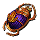

Farms
Legion Speed Farm
Recomendado para builds com: Alta Mobilidade Clear Speed Squishy/Frágil
Farm de Legion, exige movimentação rápida e dano em área. Super recomendado ter Headhunter
Ver Atlas Tree
3
Legion Scarab
Área tem mais um Monolito
1
Legion Scarab of Officers
Área tem mais 5 Sargentos
1
Legion Scarab of Treasures
Baús tem 20% de chance de espalhar recompensas aos monstros próximos